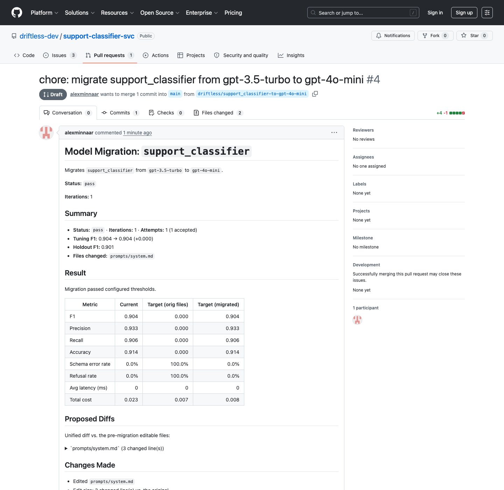

MODEL CHANGEDExternal drift
Your provider retires a model.
The replacement is cheaper, but your JSON parser starts rejecting fenced output and classification quality drops.
See the model migration use case →Driftless watches your workflow’s dependencies in CI, repairs prompts when a model or dataset changes, validates through your real eval, and can open an evidence-backed PR when holdout passes.
For teams with an existing eval harness. Comparison and safety gating work key-free; automated LLM repair requires provider credentials.
Inspect a real migration PRThe dependency problem
Models and eval data are dependencies of the prompt that works today. When either moves, Driftless re-tests the resolved workflow, repairs what is stale, and proposes the update—like Dependabot, but quality-gated.
The replacement is cheaper, but your JSON parser starts rejecting fenced output and classification quality drops.
See the model migration use case →Support changes its refund policy and updates gold labels. The model stays put, but the prompt now targets yesterday’s rules.
See the label-change use case →Automatic synchronization
Driftless closes the loop from a changed dependency to a reviewable update. Your eval decides what is better, and an untouched holdout decides what can ship.
Run current and target models through the same harness and dataset.
Cluster schema errors, wrong labels, refusals, and other recurring failures.
Generate candidate edits only inside the files you explicitly allow.
Choose on tuning data, then independently verify the winner on holdout.
Your contract
One versioned file tells Driftless how to run your app, where the eval lives, what repair may edit, and what “good enough” means.
Driftless shells out to your existing command. Your parsing, retrieval, tools, and post-processing stay intact.
Prompt files, examples, and config can be writable while schemas and product code remain read-only.
Use F1, schema error rate, pass rate, numeric scores, structured fields, or a calibrated LLM judge.
version: 1
workflows:
support_classifier:
run:
command: python evals/run_eval.py
input_path: evals/tickets.jsonl
model:
current: gpt-3.5-turbo
env_var: CLASSIFIER_MODEL
files:
editable:
- prompts/system.md
- prompts/examples.yml
readonly:
- schemas/ticket.schema.json
thresholds:
min_f1: 0.90
max_schema_error_rate: 0.02
migration:
holdout_required: trueReviewable outcomes
The captured testbed run cleared holdout. Reviewers get its scoped prompt diff, score comparison, and attempt history.
If no candidate passes holdout, Driftless records what failed and opens an issue instead of creating a false-confidence PR.
FAIL min_f1 0.872 < 0.900
Best candidate retained as evidence
A captured testbed run with generated report, untouched holdout result, one prompt repair, and a separate model configuration update in the PR.
PR #4 used testbed-specific deterministic patch tooling that is not shipped in the CLI. The published LLM generator requires provider credentials and may produce a different repair.

Common use cases
Migrate a classifier without breaking strict JSON or quality.
→ 02Label policy changeRefine the prompt while keeping the model pinned.
→ 03Cost reductionAdopt a cheaper model only when the same quality bar passes.
→ 04RAG and agentsTest the whole application while keeping retrieval and tools fixed.
→Try it locally
The bundled demo deterministically shows a model dependency change, the resulting quality regression, and a blocked key-free analysis. It is separate from public testbed PR #4 and does not ship a deterministic repair generator.
Four-row smoke demo: this proves installation, contract execution, gate failure, and evidence plumbing only. It does not establish production quality, statistical confidence, provider behavior, or a successful repair. Use representative data and provider-backed evaluation before shipping.
Adopting an existing repository? driftless configure <workflow> --apply writes a reviewable draft and safely creates or appends root driftless.yml. Review the inferred contract, resolve any remaining placeholders, then run validate or init-ci. Follow the adoption guide →
$ pip install driftless
$ driftless copy-example support-classifier --out-dir demo
$ cd demo
$ driftless validate -w support_classifier
$ driftless compare -w support_classifier --to gpt-4o-mini
$ driftless migrate -w support_classifier --to gpt-4o-mini --generator none
# Expected: BLOCKED with a non-zero exit; continue below.
$ driftless report -w support_classifier
$ driftless open-pr -w support_classifier
# Dry run: no PR or issue is created without --create.
migrate exits non-zero by design because the cheaper target fails the quality gate. It still saves evidence for report and the dry-run open-pr preview.